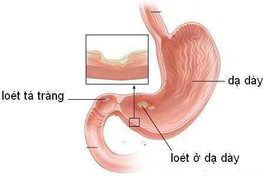

Tin tức
9 lợi ích sức khỏe của nấm bờm sư tử và tác dụng phụ
Nấm bờm sư tử (còn gọi là nấm hầu thủ hoặc yamabushitake) là loại nấm lớn, có màu trắng và xù xì giống bờm sư tử. Có thể ăn sống, nấu chín, sấy khô hoặc ngâm nấm hầu thủ như một loại trà. Chiết xuất của chúng được sử dụng cho các loại thực phẩm chức năng. Nó có vị giống hải sản (cua hoặc tôm hùm) và chứa nhiều hoạt chất sinh học có tác dụng tốt đối với cơ thể, đặc biệt là não, tim và ruột.
1. 9 lợi ích sức khỏe của nấm hầu thủ và chiết xuất
1.1 Bảo vệ cơ thể chống lại chứng mất trí nhớ
Khả năng hình thành và phát triển các kết nối mới của não thường giảm dần theo tuổi tác. Điều này có thể giải thích vì sao hoạt động trí óc trở nên trì trệ hơn ở nhiều người lớn tuổi. Các nghiên cứu đã phát hiện ra rằng nấm hầu thủ có chứa 2 hợp chất đặc biệt có thể kích thích sự phát triển của tế bào não là hericenones và erinacines. Ngoài ra, các nghiên cứu trên động vật cũng phát hiện rằng loại nấm này có thể giúp cơ thể chống lại bệnh Alzheimer - một bệnh thoái hóa não gây mất trí nhớ tiến triển.
Trên thực tế, nấm bờm sư tử và chiết xuất của nó được chứng minh là có tác dụng làm giảm các triệu chứng mất trí nhớ ở chuột, ngăn ngừa tổn thương tế bào thần kinh do mảng amyloid - beta tích tụ trong não ở bệnh nhân Alzheimer. Và hiện mặc dù chưa có nghiên cứu phân tích liệu nấm hầu thủ có lợi cho bệnh Alzheimer ở người hay không, nhưng nó có tác dụng tăng cường hoạt động trí óc.
Một nghiên cứu ở người lớn tuổi bị suy giảm nhận thức nhẹ cho thấy việc tiêu thụ 3g nấm bờm sư tử dạng bột mỗi ngày trong 4 tháng giúp cải thiện đáng kể chức năng thần kinh. Tuy nhiên, những lợi ích này biến mất ngay khi ngừng bổ sung nấm hầu thủ. Như vậy, nó thúc đẩy sự phát triển thần kinh và bảo vệ não khỏi những tổn thương liên quan tới bệnh Alzheimer. Tuy nhiên, điều quan trọng cần lưu ý là hầu hết các nghiên cứu đều được thực hiện trên động vật hoặc trong ống nghiệm. Do vậy, cần có thêm nhiều nghiên cứu trên người để khẳng định lợi ích này của nấm bờm sư tử.
1.2 Giảm nhẹ các triệu chứng trầm cảm và lo âu
Có tới 30% số người sống ở các nước phát triển gặp phải các triệu chứng lo âu và trầm cảm. Mặc dù có nhiều nguyên nhân gây lo âu và trầm cảm, nhưng chứng viêm mãn tính có thể là một trong những nguyên nhân chính. Và các nghiên cứu trên động vật đã phát hiện ra rằng chiết xuất từ nấm bờm sư tử có tác dụng giúp tái tạo tế bào não, cải thiện hoạt động của vùng hải mã - vùng não chịu trách nhiệm xử lý ký ức và cảm xúc. Việc cải thiện chức năng của hồi hải mã giúp làm giảm các hành vi lo lắng và trầm cảm (nghiên cứu trên chuột thí nghiệm).
Một nghiên cứu nhỏ thực hiện ở những phụ nữ mãn kinh cho thấy ăn bánh quy có chứa nấm hầu thủ hằng ngày trong 1 tháng có thể làm giảm cảm giác lo lắng và kích thích.
Dầu đậu nành có thể được dùng để chiên xào, tốt hơn so với dầu bắp và dầu hướng dương. Tuy nhiên, bạn không nên chiên xào quá lâu hoặc đun dầu đậu nành ở nhiệt độ quá cao, sẽ sinh ra chất độc gây ung thư.
1.3 Tăng tốc độ phục hồi sau chấn thương hệ thần kinh
Hệ thần kinh con người bao gồm não, tủy sống và các dây thần kinh đi khắp cơ thể. Chúng phối hợp với nhau để gửi và truyền các tín hiệu điều khiển hầu hết mọi chức năng của cơ thể. Tổn thương não hoặc tủy sống có thể gây tê liệt hoặc mất chức năng thâm thần, mất nhiều thời gian để phục hồi.
Tuy nhiên, nghiên cứu đã phát hiện ra rằng chiết xuất nấm hầu thủ có thể giúp tăng tốc độ phục hồi của các chấn thương thần kinh bằng cách kích thích sự phát triển, tự hồi phục các tế bào thần kinh. Thực tế, chiết xuất nấm bờm sư tử đã được chứng minh là có thể làm giảm 23 - 41% thời gian phục hồi trên những con chuột bị chấn thương hệ thần kinh.
Ngoài ra, chiết xuất nấm bờm sư tử cũng có thể làm giảm mức độ nghiêm trọng của tổn thương não sau đột quỵ. Trong một nghiên cứu, việc sử dụng chiết xuất nấm hầu thủ liều cao cho chuột ngay sau khi bị đột quỵ giúp làm giảm viêm, giảm 44% kích thước chấn thương não liên quan tới đột quỵ. Dù vậy, vẫn chưa có nghiên cứu được thực hiện trên người để đánh giá được tác dụng này của nấm bờm sư tử.
1.4 Chống lại các vết loét trong đường tiêu hóa
Các vết loét có thẻ hình thành ở bất kỳ vị trí nào dọc theo đường tiêu hóa, bao gồm dạ dày, ruột non và ruột già. Loét dạ dày thường do 2 nguyên nhân: Sự phát triển quá mức của vi khuẩn H.pylori và tổn thương lớp niêm mạc dạ dày do sử dụng lâu dài các thuốc chống viêm không steroid (NSAID).
Chiết xuất từ nấm hầu thủ có thể bảo vệ cơ thể chống lại sự phát triển của các vết loét dạ dày bằng cách ức chế sự phát triển của vi khuẩn H.pylori và bảo vệ niêm mạc dạ dày khỏi bị tổn thương. Ngoài ra, một nghiên cứu trên động vật cũng cho thấy chiết xuất từ nấm hầu thủ có hiệu quả hơn thuốc giảm axit truyền thống trong việc ngăn ngừa loét dạ dày do rượu. Đồng thời, nó cũng không có bất kỳ tác dụng phụ tiêu cực nào. Bên cạnh đó, chiết xuất từ nấm bờm sư tử còn giúp giảm viêm, ngăn ngừa tổn thương mô ở các khu vực khác của ruột. Thực tế, chúng có thể hỗ trợ điều trị các bệnh viêm ruột như viêm loét đại tràng và bệnh Crohn. Một nghiên cứu ở những bệnh nhân viêm loét đại tràng cho thấy việc uống bổ sung các sản phẩm chứa 14% chiết xuất từ nấm bờm sư tử sau 3 tuần có thể làm giảm đáng kể các triệu chứng và cải thiện chất lượng cuộc sống. Tuy nhiên, cần có thêm nhiều nghiên cứu để khẳng định tác dụng của nó.
Bình luận